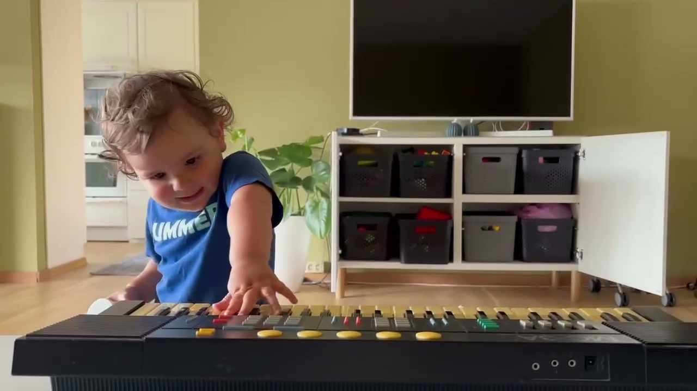
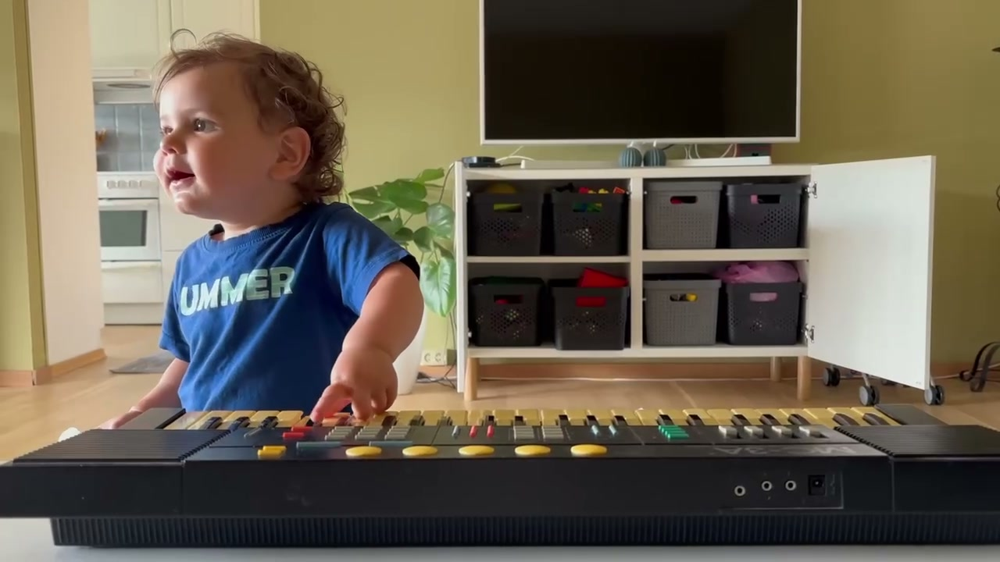
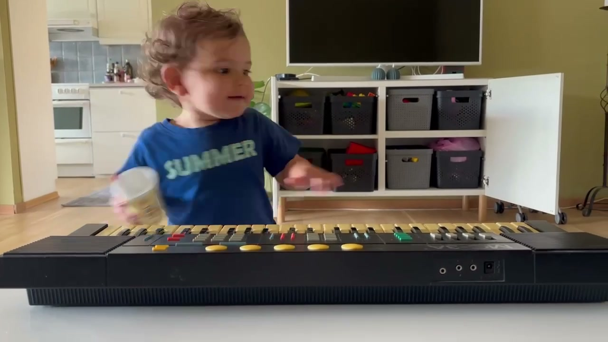

The raw eight seconds
Straight out of the video, untouched. One note at a time, a thin near-sine tone, and nothing at all underneath it — no bass, no drums, no chords.
Eight seconds on an old keyboard
My nephew was jamming on an old keyboard. My in-laws posted a video of it, and somewhere in the middle of that video there were eight seconds that sounded — genuinely, not as a joke — like a jazz melody. A tritone, a blue note, and a hook that repeats itself at half length. So I pulled those eight seconds out, worked out what they had actually played, and built a band underneath it.
Three frames from the original clip. The tune I used runs from 16.0s to 24.0s of a 24.53-second video — the last eight seconds of the take.



Stills only — the video itself stays in the family. What follows is all built from its audio.
Four stages, in order. Play them top to bottom.
Straight out of the video, untouched. One note at a time, a thin near-sine tone, and nothing at all underneath it — no bass, no drums, no chords.
Every note found by pitch-tracking, played back as plain tones. Sixteen notes, spanning B4 to F5. This is the melody with the room and the keyboard's own character stripped away.
The honest test. Original in your left ear, my transcription in your right. If they drift apart, I got a note wrong — this is how you check my work rather than taking my word for it.
114 BPM, swung. Eighteen bars. Walking bass, brushes, Rhodes, and the original melody sitting on top of a band that never existed in the room.
The clip is narrower than it sounds. Almost all of its energy sits in one octave-and-a-bit of the spectrum, and the whole melody fits inside a tritone.
Two things make this jazz rather than noise. The tritone B–F frames the melody and is its most-used pair. And that sliver of E♭ — 93 milliseconds — is a blue note rubbing against the E natural. One twelfth of a second is all it takes.
The figure B4 → E5 → F5 appears twice: once over about 0.57s, then compressed into 0.24s — same shape, half the length. It works over all four chords without being transposed, which is why the arrangement can just keep throwing it at the changes.
| Note | Dm7 | G7 | Cmaj7 | A7♭13 |
|---|---|---|---|---|
| B | 13 | 3 | 7 | 9 |
| E | 9 | 13 | 3 | 5 |
| F | ♭3 | ♭7 | 11 | ♭13 |
Four bars, 4/4, repeated. A turnaround that lands back on Dm7.
Notation didn't render. The melody in order is: D5 C5 B4 E5 F5 | B4 E5 D5 | C5 B4 E♭5 C5 B4 E5 F5 | C5.
The E♭ in bar 3 is the blue note — marked in orange. The small notes in bars 1 and 2 are grace notes: at 81 ms and 128 ms they're closer to a slide through the interval than deliberate notes.
The bass plays a two-feel — root on 1 and 3 — through the intro and first head, and only opens into the walking line from the second head. That's what keeps the first minute calm.
There isn't a sampled instrument anywhere in this track. The whole band is synthesized from scratch in numpy, which is either the charming part or the ridiculous part depending on your tolerance.
FM synthesis, 1:1 ratio, modulation index decaying over 130 ms to get the bell attack.
Karplus-Strong plucked string, low-passed at 2.6 kHz for a warm flatwound tone.
Twenty additive partials with real string inharmonicity; the high ones decay faster.
Pitch-swept kick with a 52 Hz sub, bandpassed-noise brushes, ride from seven inharmonic partials.
The source clip had no low end and nothing above 6 kHz, so the bass and the cymbals had a completely empty spectrum to move into. That part was luck.